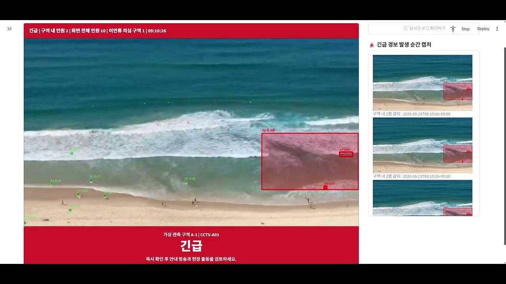
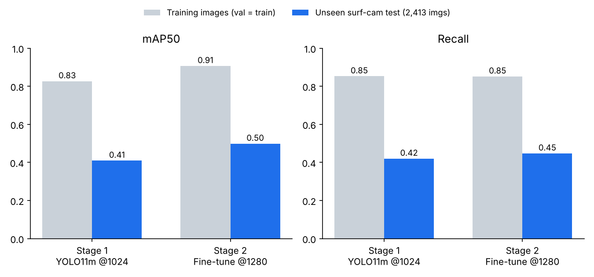

문제
이안류는 해안에서 먼바다 쪽으로 빠르게 빠져나가는 좁은 물줄기입니다. 휩쓸리면 혼자 빠져나오기 어렵고, 1~2분 만에 100m 이상 떠밀릴 수 있습니다.
기존 감시와의 차이
이안류 지수 서비스
해수욕장별 이안류 위험도를 4단계로 알려 주지만, 특정 CCTV 화면 속 위험 구역 안에 사람이 있는지는 알려 주지 않습니다.
CCTV 육안 관제
안전요원이 넓은 해변을 여러 화면으로 계속 지켜봐야 합니다. 몇 픽셀 크기의 사람을 눈으로 찾는 데 시간이 걸립니다.
이안류 긴급 알리미
이안류 구역과 사람을 함께 탐지해 "구역 안에 사람이 있는가"까지 판단하고, 긴급할 때만 사진과 함께 알림을 보냅니다.
해결 방법과 데모
같은 탐지 모델로 두 가지 관제 콘솔을 만들었습니다. 웹 콘솔은 시연과 경보 이력 관리에, 데스크톱 콘솔은 GPU를 쓰는 실시간 관제에 맞췄습니다.
위험 등급
이안류 의심 구역 없음
이안류 구역은 있으나 구역 안에 사람 없음
이안류 구역 안에 사람 감지 → 스마트폰 알림 발송

작동 원리
이안류 모델과 사람 모델, 두 개의 AI 모델이 같은 프레임을 따로 분석한 뒤, 결과를 겹쳐서 위험을 판정합니다.
영상 입력
CCTV 녹화 영상
웹은 업로드, 데스크톱은 파일을 열어 프레임 단위로 처리
이안류 구역
YOLO11m
수면에서 이안류 의심 구역을 박스로 검출
입수자
YOLO11m · SAHI
넓은 화면을 768px 타일로 나눠 몇 픽셀 크기의 사람까지 검출
침범 판정
공간 교차
사람이 이안류 구역 안에 있는지 판정 → 관찰·경고·긴급
알림 필터
연속·쿨다운
파도 거품 오탐과 알림 폭주를 막는 필터 통과 시에만 발송
푸시 알림
Firebase FCM
스냅샷·인원 수·위험 등급을 안드로이드 앱으로 전송
알림 폭주를 막는 필터 (데스크톱 콘솔)
30fps 영상에서 긴급 판정이 계속되면 알림이 수백 통 나갈 수 있습니다. 아래 조건을 거쳐 꼭 필요할 때만 스냅샷을 저장하고 알림을 보냅니다.
| 조건 | 기본값 | 하는 일 |
|---|---|---|
| 연속 판정 | 3프레임 | 위험이 3프레임 연속일 때만 사고 세션 시작 (파도 거품 같은 순간 오탐 제거) |
| 새 위치 | 220px | 기존 위험 지점에서 220px 밖에 새 사람이 나타나면 바로 다시 캡처 |
| 인원 증가 | — | 구역 안 위험 인원이 늘면 바로 다시 캡처 |
| 같은 구역 억제 | 13초 | 같은 구역은 13초 동안 다시 캡처하지 않음 |
| 세션 종료 | 4초 | 위험이 4초 동안 없으면 사고 세션 종료 |
두 관제 콘솔 비교
| 데스크톱 관제 콘솔 | 웹 관제 콘솔 | |
|---|---|---|
| 기술 | C# .NET 8 WPF, ONNX Runtime (DirectML GPU), OpenCvSharp | Python, Streamlit, Ultralytics, SAHI, PyTorch (FP16) |
| 침범 판정 | 사람 박스와 이안류 박스의 교차 영역 | 사람 발 위치(박스 하단 중앙)가 이안류 구역 안(경계 15px 여유) |
| 속도 | 30 FPS 실시간 처리 | 스냅샷·발송을 백그라운드 스레드로 분리 |
| 경보 이력 | SQLite 로그, 발송 상태·확인 여부, 스냅샷 보기 | SQLite 이벤트 저장, 화면에서 "확인 완료" 처리 |
안드로이드 앱(Kotlin)은 FCM 토픽 rip_current_alert를 구독해, 알림이 오면 구역·인원 수·감지 시각·위험 등급을 보여 주고 현장 스냅샷을 핀치 줌으로 확대해 볼 수 있습니다.
결과
"미지 해변"은 학습·검증에서 완전히 격리한 낙산·대천 해변 400장입니다. 처음 보는 해변에서도 통하는지를 보는 실전 기준입니다.
0.2031 → 0.3664
279,151장 · 7개 해변에서
(YOLO11m)
위험 시 3초 안에 알림
미지 해변 Recall (낙산·대천 400장)
이안류 모델 비교 (같은 Dataset v2)
| 모델 | 검증 mAP50 | 미지 mAP50 | 미지 Recall | F1 |
|---|---|---|---|---|
| YOLO11s (9.4M) | 0.7508 | 0.2336 | 0.3046 | 0.3909 |
| YOLO11m (20.1M) ★ | 0.7526 | 0.2546 | 0.3664 | 0.4023 |
| YOLO11x (56.9M) | 0.7380 | 0.0880 | 0.0662 | 0.1197 |
가장 큰 11x는 해안 배경을 외워 미지 해변에서 무너졌고, 전 지표 1위인 11m을 최종 모델로 골랐습니다. 모델 크기와 일반화 성능이 역 U자 관계였습니다.
문제와 해결
| 문제 | 원인과 조치 | 결과 |
|---|---|---|
| 검증 mAP50 0.7410인데 미지 해변 Recall 0.2031 | 무작위 분할로 같은 카메라·시간대 프레임이 Train/Val에 섞임 → 15초 간격 샘플링 + 날짜·시간·카메라 기준 GroupKFold 분할, 스페인 해변 데이터 결합 | Recall 0.3664 |
| 세그멘테이션 학습 붕괴 (mask mAP50 0.0042) | SAM으로 만든 마스크 라벨 품질 문제 → 박스 탐지로 전환 | 검증 mAP50 0.7526 |
| 멀리 있는 입수자를 거의 못 찾음 | 학습 데이터의 사람이 실제 CCTV보다 큼 → 작은 사람 위주 재정제, 1280 해상도 파인튜닝, SAHI 타일 추론 | mAP50 0.827 → 0.907 |
| 파도 거품으로 알림 폭주 | 연속 판정 · 새 위치 · 인원 증가 · 같은 구역 억제 필터 | 중복 알림 억제 |
사람 탐지 모델: 학습 데이터 점수와 실제 점수
프로젝트 이후, 학습에 쓰지 않은 해안 서프캠 이미지 2,413장으로 사람 모델을 다시 평가했습니다. 학습 데이터 기준 점수가 실제 성능을 크게 부풀리고 있었지만, 작은 사람에 맞춘 파인튜닝의 효과는 처음 보는 데이터에서도 확인됐습니다.
- 1차 학습: 학습 데이터 mAP50 0.827 → 처음 보는 데이터 0.410
- 2차 파인튜닝: 학습 데이터 mAP50 0.907 → 처음 보는 데이터 0.499

한계와 다음 단계
한계
- 실제 CCTV 실시간 스트림이 아니라 녹화 영상으로 동작합니다.
- 미지 해변 성능(Recall 0.37)이 검증 성능보다 크게 낮습니다.
- 출력은 관제 보조 정보입니다. 이안류를 공식 확정하거나 구조를 자동 요청하지 않습니다.
다음 단계
- RTSP 실시간 스트림 연동과 다중 CCTV 관제 대시보드
- 이안류 지수·파고·풍속·조류 등 해양 관측 데이터 결합
- 해변·카메라 단위로 분리한 평가셋으로 사람 모델 재학습
배운 점 — 모델 크기보다 분할 설계와 데이터 정제가 실전 성능을 결정한다.
팀과 링크
팀 비버즈 · 4인 · 10일 · 2026.09
| 팀원 | 담당 |
|---|---|
| knlee | 이안류 탐지 모델(Dataset v2 구축, YOLO11 학습·선정) · 데스크톱 관제 콘솔 · 알림 서비스 |
| Miita212, jongho | 사람(입수자) 탐지 모델 학습·파인튜닝 |
| gonggong77 | 웹 관제 콘솔 · 안드로이드 알림 앱 |
링크
- 코드: github.com/artaban125/rip-current-alert
- 데스크톱 관제 콘솔 시연: YouTube
- 웹 관제 콘솔 시연: YouTube
- 기획보고서: docs/01_기획보고서.md